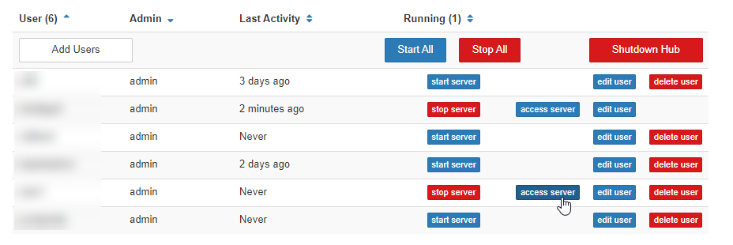

Hub admins can unilaterally perform actions on a user’s server via the
Administrator’s Panel. These are primarily used to debug a user’s session
easily.
You can access the admin panel by clicking the Admin button in the top bar
in your hub control panel. Alternatively, you can go to this URL in your
browser: https://<your-hub-url>/hub/admin.
Accessing a user’s server is useful when trying to debug or reproduce an issue they might have. This facility is available to admins via the admin panel.
In the admin panel, you can click access server to gain control of a user’s
currently running server. If it isn’t running, you can click start server
first and wait for it to start.

Fig. 7 Clicking “access server” will allow you to control the user’s session.#
This will bring you to the default interface that the user would have seen if they had just logged into the hub. From here, you can navigate to the notebook the user has reported issues with, and help them debug.
Warning
If you both work on the same notebook at the same time, you will just
overwrite each other’s code! The state of the notebook will be that of
whoever saved the notebook last. There is no Google Docs’ style
real-time collaboration yet, although it is coming
Warning
When you control a user’s server, all of your actions will be run as
if the user ran it themselves. This can be confusing for some users
and is generally not best-practice. We recommend telling users when
you are taking over their session, and using this feature mostly to understand what the user was trying to do, rather than to make major
changes to their code or notebook outputs.
For user images that are built with repo2docker and that do not define a custom Dockerfile, the logs of each user’s Jupyter server are located in their home directory, at ~/.jupyter-server-log.txt.
These contain information about every event that occurred as a part of a user’s session, and are useful for debugging unexpected errors and problems.
For example, to print the contents of your own user server log:
Open a terminal (e.g., choosing Terminal from Launcher in JupyterLab)
Run the command:
$ cat~/.jupyter-server-log.txt
To access a different user’s server logs, you can access their server and run the same command above to print their logs.
Sometimes, you need to just turn a user’s server on and off. You can
also do this from the admin interface, by hitting the Stop server
button, waiting for the server to stop, and the Start server button
again.
This is particularly useful when their session might have gotten
out of whack by packages they’ve installed temporarily that screwed up
the default, since a restart will wipe the slate clean.
Important
When a user’s server is stopped (by an admin, or by the user themselves), no data is lost in the user’s home directory.
However, any packages temporarily installed via !pip or !conda are cleared, to make sure that everyone in the hub is operating from the same clean environment as much as
possible.
Active notebooks have their kernel killed as well.
To ensure efficient resource usage, user servers without interactive usage for a
period of time (default 1h) are automatically stopped (via
jupyterhub-idle-culler).
This means your user server might be stopped for inactivity even if you have
a long running process in the notebook. This timeout can be configured.
“Culling a user server” has the same effect as stopping a user
server, but should be distinguished from “culling a
kernel” inside a user server. jupyterhub-idle-culler is only involved in
culling user servers, not culling kernels.
As a failsafe jupyterhub-idle-culler is by 2i2c’s defaults configured to stop
user servers that has been running for more than 7 days. This max age can be
re-configured.
In addition to the user server, there may also be culling at the kernel level.
The kernel is the thing that actually “runs code”, and a kernel without any activity for some time means that somebody has not executed code in that time.
By default, kernels will be checked for activity every 5minutes.
All kernels that haven’t shown activity in in the last hour will be stopped by the jupyterhub-idle-culler.
This window can be configured if you’d like to change the window of inactivity needed before user kernels will be stopped.
See the Hub Engineer’s guide for some documentation on this.
In some cases, you may want to temporarily disable hub access for all users.
For example, if you are concerned that users on your hub are taking inappropriate actions, and you wish to stop all activity before investigating.
To prevent all user sessions from starting, you can use the configurator UI to choose a user image that does not start.
Go to your hub’s configurator menu (at {{yourhubURL}}/services/configurator).
Under User Docker Image, paste the following text:
busybox:latest
This specifies a user image that is not compatible with JupyterHub, and will prevent user sessions from starting.
You can revert this change by deleting the text and hitting Submit again (or changing it back to its previous value).
Hit Submit
Stop all user sessions from you Administrator panel.
Go to {{yourhubURL}}/hub/admin and click Stop All.
This will stop all user sessions, and they will no longer be able to log in after doing so.
If you do this, you should notify the 2i2c support team as they may need to follow up with some changes to your infrastructure.